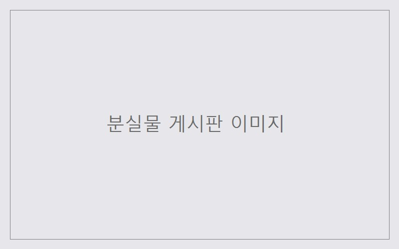

서비스 소개
잃어버린 물건, 더 이상 게시판을 뒤지지 마세요
캠퍼스 분실물 찾기는 학생들이 캠퍼스 안에서 잃어버리거나 주운 물건을 한곳에 등록하고 검색할 수 있는 서비스입니다.

주요 기능
-
분실물 등록하기
잃어버리거나 주운 물건의 사진과 장소를 등록합니다.
-
장소별로 검색하기
건물과 장소를 기준으로 분실물 목록을 찾아봅니다.
-
습득 알림 받기
내 물건과 비슷한 습득물이 등록되면 이메일로 알려줍니다.
이용 방법
내 상황에 맞는 탭을 눌러 이용 방법을 확인하세요.
잃어버린 물건을 찾을 때
- 잃어버린 물건의 종류와 마지막으로 본 장소를 등록합니다.
- 등록한 장소 주변의 습득물 목록을 확인합니다.
- 알림을 신청해 두면 비슷한 습득물이 등록될 때 이메일로 알려드립니다.
주운 물건을 돌려줄 때
- 물건 사진을 찍고 주운 장소와 시간을 기록합니다.
- 습득물로 등록하면 같은 장소에서 물건을 잃어버린 학생에게 알림이 갑니다.
- 물건은 가까운 보관 장소에 맡기고, 맡긴 장소를 게시글에 남깁니다.
습득물 보관 장소
- 학생회관 1층 학생지원센터 평일 09:00 ~ 18:00
- 중앙도서관 1층 안내데스크 매일 09:00 ~ 22:00
- 각 단과대학 행정실 평일 09:00 ~ 17:00
신분증·지갑·전자기기처럼 중요한 물건은 학생지원센터에서 따로 보관합니다.
알림 받기
이메일을 등록하면 습득물 알림을 놓치지 않고 받아볼 수 있습니다.
학교 이메일(ac.kr)을 입력하면 습득물 알림을 보내드립니다.
※ 신청 목록은 지금 열려 있는 화면에만 임시로 저장되어 새로고침하면 사라집니다. 그래서 중복 신청 확인도 현재 방문한 동안에만 이루어집니다.